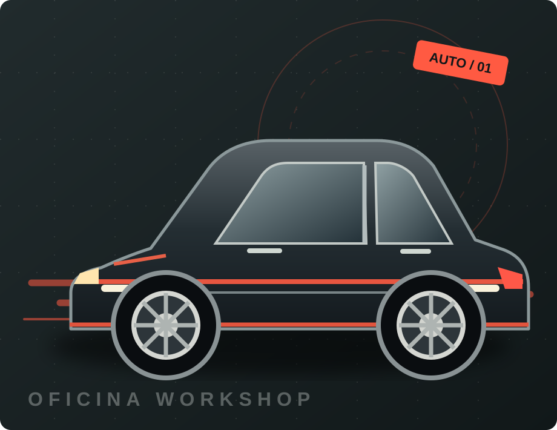

Revisão e manutenção
Inspeções preventivas e manutenção para manter o veículo em boas condições.
CONSULTAR SERVIÇO ↗Manutenção sem complicação, atendimento direto e cuidado com cada detalhe do seu carro. O caminho mais curto para voltar a rodar.

Do check-up preventivo aos reparos essenciais. Veja como podemos ajudar você a dirigir com mais tranquilidade.
Inspeções preventivas e manutenção para manter o veículo em boas condições.
CONSULTAR SERVIÇO ↗Avaliação de componentes para mais controle, estabilidade e segurança.
CONSULTAR SERVIÇO ↗Identificação de falhas e orientações claras sobre o próximo passo.
CONSULTAR SERVIÇO ↗Cuidados periódicos que contribuem para preservar o motor e seu desempenho.
CONSULTAR SERVIÇO ↗Um bom atendimento começa quando você entende o que está acontecendo com o seu veículo. Nossa proposta é unir orientação clara, atenção e manutenção responsável.
Sem formulários demorados: é só chamar e explicar o que seu carro precisa.
Envie uma mensagem com o modelo do carro e o que está acontecendo.
Entenda a avaliação inicial e combine os próximos passos.
Escolha um horário disponível diretamente pelo WhatsApp.
Conta pra gente o que você precisa. Vamos conversar sobre o próximo passo.
Este é um site demonstrativo. Endereço, horários e contato serão personalizados para cada cliente.